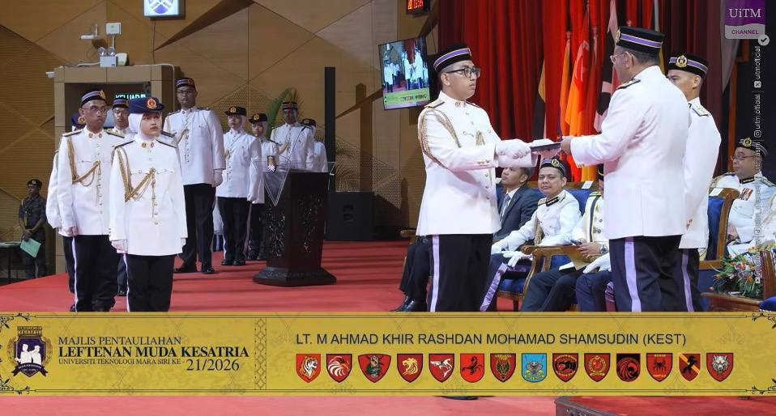
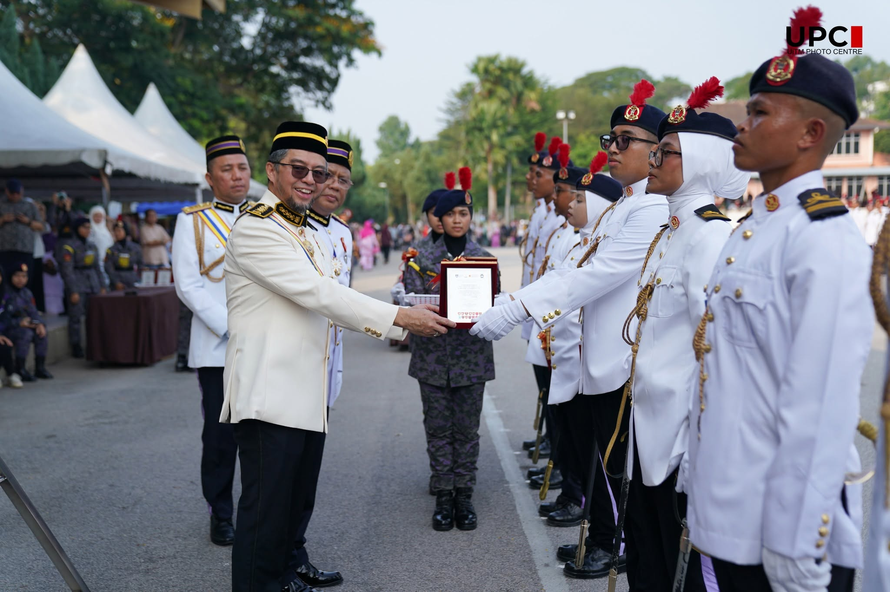

Career Objective
I am a dependable, responsible, and detail-oriented Semester 6 Bachelor of Information Systems (Hons.) Business Computing student with a current CGPA of 3.38. Practical academic experience in SQL and database management, data cleaning and preprocessing, predictive analytics, and business intelligence dashboarding using Power BI. Seeking a Data Analyst or Business Analyst internship placement from 14 September 2026 to 18 December 2026. My goal is to apply my analytical thinking, technical skills, and problem-solving abilities to provide high-quality data solutions in a professional organization.
Education
Universiti Teknologi MARA (UiTM), Kuala Terengganu
2023 – PresentBachelor of Information Systems (Hons.) Business Computing
CGPA: 3.38 | Current Semester: 6
Relevant Areas: Data Analytics, Data Mining, Machine Learning, Database Engineering, Data Visualisation, Statistical Analysis, and System Analysis and Design.
SMKA Sultan Azlan Shah, Seri Iskandar, Perak
STPMSijil Tinggi Persekolahan Malaysia (STPM)
CGPA: 3.59 | MUET: Band 4
Subjects: Pengajian Am, Usuluddin, Arabic Language, and Syariah.
Work Experience
Stall Operator
2024 – 2025Local Food Stall — Part-time
- Managed daily food preparation, customer orders, and high-volume sales operations while maintaining product quality and cleanliness.
- Monitored ingredients and stock levels carefully to minimise wastage and support smooth daily operations.
Grocery Replenishment Assistant
May 2023 – Aug 2023Lotus's — Part-time
- Restocked dry-grocery products such as rice and sugar, arranged shelves, checked product availability, and maintained an organized sales area.
Independent Delivery Partner
2021 – 2023foodpanda (Delivery Hero Malaysia) — Part-time
- Completed customer deliveries safely and efficiently, planned suitable routes, and communicated professionally with customers.
Independent Amway Business Owner (ABO)
2022 – 2024Amway Malaysia — Part-time
- Handled product promotion, customer communication, order coordination, and basic sales record keeping.
Leadership & Participations
Kesatria Commanders Battalion, UiTM
2024 – PresentLeadership Progression
- Second-in-Command (2IC) [2026 – Present]: Supports the Commander in coordinating operations, maintaining discipline, and leading battalion members.
- Pegawai Latih / Trainee Officer [2024 – 2025]: Completed structured foundational training in leadership, teamwork, discipline, and operational planning.


Projects
Pengajian Am E-Learning System
Final Year Project 2026Developed a web-based e-learning system to support Semester 1 STPM Pengajian Am students in learning, revision, and progress tracking.
Linking Park Smart Parking Prototype
2026Built a functional Arduino-based prototype that detects incoming vehicles and assigns available parking spaces automatically.
PowerBI Dashboard Challenge
2026Developed an interactive Business Intelligence dashboard using Power BI and created predictive models for university data decision-making.
Pantun Remix — Malay Pantun Learning Game
2025Created a web-based learning game that helps users learn and practise Malay pantun using PHP, CSS, and Laragon.
Customer Churn Prediction Using Decision Tree Classification
2025Prepared and analysed customer data in WEKA and developed decision tree-based classification models for a Data Mining course project.
Gym Membership Management System
2024Developed a basic system to organise gym member information and membership records.
Volunteer Work
Flood Relief Volunteer
MERCY MalaysiaSupported flood-relief activities by organising supplies, assisting with distribution, and helping affected communities under team supervision.


Skills & Competencies
Technical & Analytical Skills
SQL, Project Management, Data Cleaning and Preprocessing, Data Visualisation, Basic Statistical Analysis, Database Management, Problem-Solving, Critical Thinking.
Tools & Platforms
Microsoft Power BI, WEKA, RapidMiner, Microsoft Access, MySQL.
Programming & Web Development
Python, PHP, HTML, SQL.
Languages
Malay (Native proficiency), English (Fluent spoken and written communication).
Achievements
Komander Terbaik Kuala Terengganu (2026)
KomanderRecognised as Komander Terbaik Kuala Terengganu for demonstrating outstanding leadership, discipline, teamwork, commitment, and responsibility throughout the programme.


3rd Place — Extreme Outdoor Quest (Mountain Bike) 2024
KKECKomander Kesatria Endurance Challenge (KKEC). Achieved 3rd place against participants from multiple UiTM campuses in a demanding endurance and navigation event.


PRIDE Showcase 13.0 (2026)
UiTMUniversiti Teknologi MARA. Participated in a university innovation showcase focused on computing, project demonstration, and presentation skills.


Best Employee of the Month (2023)
LotusAwarded Employee of the Month at Lotus’s in 2023 in recognition of consistent performance, dedication, teamwork, and a strong commitment to responsibilities in the workplace.

Academic References
Muhammad Atif bin Ramlan
Academic Advisor | UiTM Kuala Terengganu
📞 013-9097166 | 📧 atif@uitm.edu.my
Nik Marsyahariani Nik Daud
Project Supervisor | UiTM Kuala Terengganu
📞 013-9229594 | 📧 nikma944@uitm.edu.my